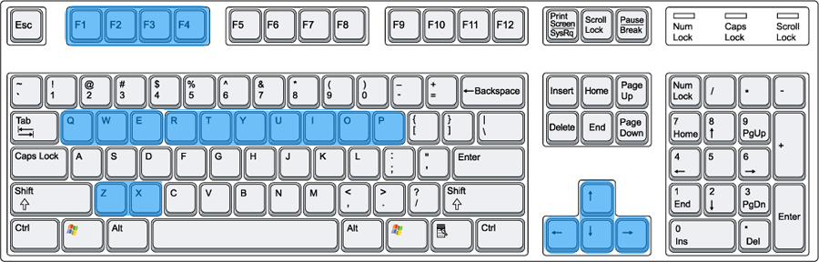
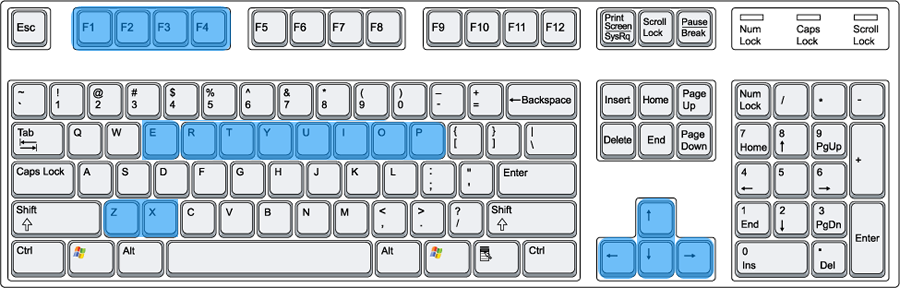
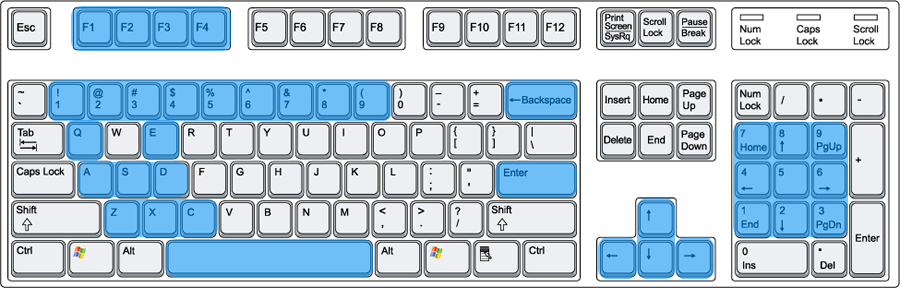

2.1 Game Modes
2.1.1 Online Play
This mode is the "single player campaign" of the game. The Player completes quests, builds a virtual army, and interact with other Players to progress the plot. The game takes note of when the Player plays the game in real time as that corresponds to when the scripted other Player come online in "game time". This allows for some degree of non-linear storytelling. It has the following features:
- Unit Roster
- Inventory
- Compendium
- Friends
- Messages
- Chat
- News
- Quests
- Achievements
- Statistics
Unit Roster allows the Player to see all the members they have recruited and change
their equipment, skills and modify their attributes.
Rasayana Window allows the Player to modify items using the ecrys they have gathered.
Compendium is a compilation of all information that the Player encounters in the game. This
includes human, monster, golems, weapons, armor, parts etc.
Friends lists all the other players that the Player comes in contact with. This feature
allows the player to see the setups of other Players
Messages keeps private messages exchanged between players. This feature lets you read,
reply, archive, and delete the messages. Additionally, you can send a friend request to the other
player. If this is successful, then the other player is added to your Friends list.
Chat allows two-way communication between the Player and his/her Friends. This serves as
the modus of dialogue in this game.
Quests lists the available battles that the Player can accept. The Quests available depends
on when the Player logs into the game in "real time". Usually there are 64 quests available at any
time, but only a maximum of 16 can be seen based on pre-requisite quests or plot events the Player
needs to accomplish before undertaking them.
Achievements lists some goals that player's can pursue for bragging rights to other players.
These goals are completely unecessary to progressing the plot, but getting certain achievements can
improve the Player's reputation which makes some plot-related events easier to accomplish.
Statistics takes note of some aspects of the player's performance (e.g. highest damage dealt,
number of wins, number of losses etc.). This frequently ties into Achievements, which are often
granted when some statistics reach a certain level. Statistics are to make the player feel empowered
in the long term as they see their characters grow stronger over time.
2.1.2 Offline Play
This mode is a "limited" form of the game (hence, the demo). It loads in one of the player's save files and anything done in Offline Play transfers to Online Play. This mode is more for players that wish to brush up on their skills or go after achievements. It has the following features:
- Unit Roster
- Inventory
- Compendium
- Achievements
- Statistics
- Tutorial
- Practice
- Grindfest
- Speedrun
Tutorial gives a refresher on the skills and techniques required to play the game at a
greater level of detail than what is touched on in Online Play. New tutorial episodes are added
as the mechanic is covered in Online Play. Each episode takes you into a scripted battle with an
AGM (Automated Game Master) that leads you through the mechanic and responds to how you perform it
in battle. Players can leave a tutorial episode at any point.
Practice allows the player to try a couple quests to practice some of their skills and
trying out certain party and skill configurations. More quests become available as the plot
progresses. The match type of quests can be changed by the Player.
Grindfest is a battle mode specifically made for player that want to grind for experience
and items. The battle is a single continuous round. Players can control the frequency of waves,
average level of enemies and the elemental affinity of the enemies. Note that in this mode you can't
see the enemy's status on the HUD, as it is replaced by Grindfest settings.
Speedrun allows you to replay old Miniboss, Boss and Superboss quests once they are beaten
in Online Play to get better times and hence, better rewards and possible achievements.
2.2.3 Modding Tools
This mode is unlocked once Online Play is beaten. Includes a level builder and wave planner.
2.2 Control Scheme
2.2.1. Hub (Online)

Up (Press): Move Cursor Up
Left (Press): Move Cursor Left
Down (Press): Move Cursor Down
Right (Press): Move Cursor Right
Z: Confirm
X: Cancel
Q: Quests
W: Recruitment Office
E: Messages
R: Rasyana Window (when cursor is on item)
T: Friends
Y: Chat Window
U: Unit Info (when cursor is on unit)
I: Inventory
O:
P: Party Setup
F1: Compendium
F2: Statistics
F3: Achievements
F4: Logout Prompt
2.2.1. Hub (Offline)

Up (Press): Move Cursor Up
Left (Press): Move Cursor Left
Down (Press): Move Cursor Down
Right (Press): Move Cursor Right
Z: Confirm
X: Cancel
E: Grindfest
R: Rasyana Window (when cursor is on item)
T: Tutorial
Y: Practice
U: Unit Roster
I: Inventory
O: Speedrun
P: Party Setup
F1: Compendium
F2: Statistics
F3: Achievements
F4: Logout Prompt
2.2.3. Battle

Up (Press): Face Up
Left (Press): Face Left
Down (Press): Face Down
Right (Press): Face Right
Up (Hold): Move Up
Left (Hold): Move Left
Down (Hold): Move Down
Right (Hold): Move Right
C + Up: Roll Up
C + Left: Roll Left
C + Down: Roll Down
C + Right: Roll Right
Z (Press): Attack / Confirm
X (Press): Block / Cancel
A (Press): Use Phys Skill #1
S (Press): Use Phys Skill #2
D (Press): Use Phys Skill #3
Q (Press): Use Magic Skill #1
W (Press): Use Magic Skill #2
E (Press): Use Magic Skill #3
Q (Hold): Charge Magic Skill #1
W (Hold): Charge Magic Skill #2
E (Hold): Charge Magic Skill #3
Enter: Pause->Menu
Spacebar: Pause-> Metasync Option
Backspace: Pause->Change Target
1: Use Item (Slot 1)
2: Use Item (Slot 2)
3: Use Item (Slot 3)
4: Use Item (Slot 4)
5: Use Item (Slot 5)
6: Use Item (Slot 6)
7: Use Item (Slot 7)
8: Use Item (Slot 8)
9: Use Item (Slot 9)
F1: Pause -> Compendium
F2: Pause -> Team AI Configuration
F3: Pause -> Enemy Party Info
F4: Pause -> Forfeit Prompt